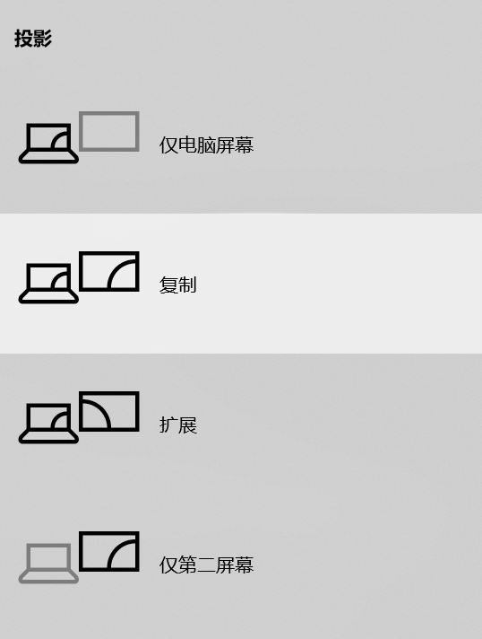

（1）通常幕布已经放下，如果已经放下，跳过这一步。 （2）如果幕布没有放下，请按下幕布下方的按钮将幕布放下，这个按钮通常在黑板旁边。
（1）确认与电脑连接的VGA线已经插好。 （2）打开电脑电源。
（1）按下投影仪遥控器上的电源按钮。 （2）耐心等待投影仪开机。 （3）投影仪顶端指示灯亮起，幕布出现投影画面。
注意：投影仪使用期间请勿直视投影仪镜头，以免对眼睛造成伤害。
按下投影仪遥控器上的“source search”按钮，投影仪将自动探测输入信号并切换图像。
对于WIN10系统，按下WIN+P键将出现下图，选择“复制”即可完成屏幕切换。

播放PPT中可能用到的实用功能:
（1）按下遥控器上的“A/V Mute”按钮，暂时隐藏屏幕画面和声音。 （2）再次按下“A/V Mute”按钮，恢复画面和声音。
（1）按下遥控器上的“Freeze”按钮，屏幕将开始静止。 （2）再次按下“Freeze”按钮，屏幕将恢复到当前界面。
按下遥控器上的电源按钮，再次按下即确认关机。
将与电脑端连接的VGA线插头拔出，使用结束。
Contents: